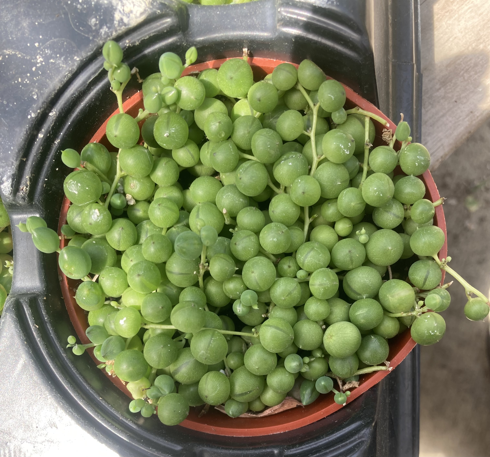
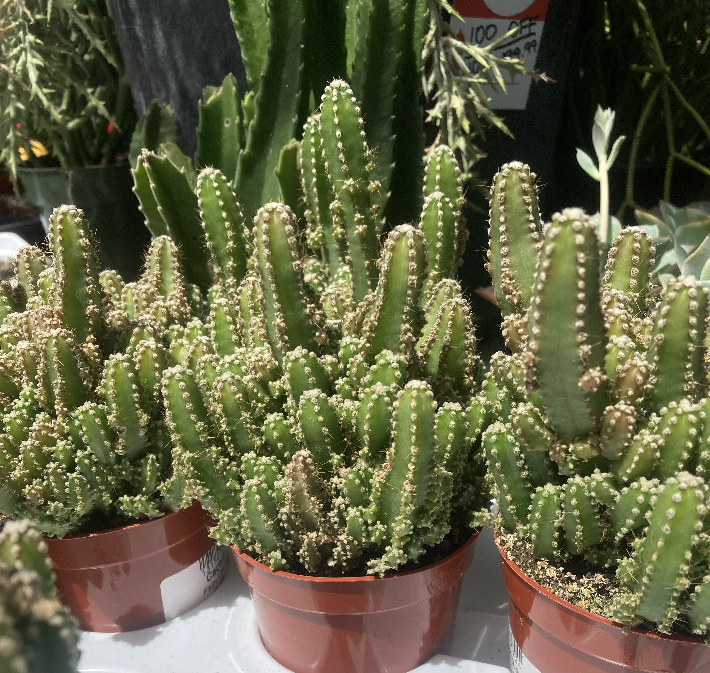

This page highlights aromatic herbs and sculptural succulents. These five plants add fragrance, beauty, and resilience to your garden or windowsill. They're low-maintenance, unique, and each has its own character. Here's what they need to thrive.
French Lavender
- Sunlight: Full sun, 6-8 hrs
- Soil: Sandy, well-draining
- Water: Let dry out between waterings
- Fertilizer: Rarely needed
- Pruning: Light trim after bloom
- Cold: Tender perennial in 6a
- Pests: Root rot if overwatered

Mojito Mint
- Sunlight: Full to part sun
- Soil: Moist, rich soil
- Water: Keep evenly moist
- Fertilizer: Monthly light feed
- Trim regularly to maintain shape—and to have fresh sprigs ready for your next mojito.
- Cold: Hardy perennial
- Pests: Aphids, whiteflies

String of Pearls
- Sunlight: Bright indirect
- Soil: Cactus/succulent mix
- Water: Low; let dry fully
- Fertilizer: Once/month in spring/summer
- Pruning: Trim vines as needed
- Cold: Bring indoors for winter
- Pests: Mealybugs if overwatered

Gollum Jade
- Sunlight: Full sun
- Soil: Sandy, cactus soil
- Water: Very low needs
- Fertilizer: Monthly in summer
- Pruning: Pinch tips to shape
- Cold: Not frost-hardy
- Pests: Rare; watch for rot

Fairy Castle Cactus
- Sunlight: Full sun
- Soil: Fast-draining, dry soil
- Water: Once every 2–3 weeks
- Fertilizer: Only during active growth
- Pruning: Rarely needed
- Cold: Not cold tolerant
- Pests: Watch for scale, rot